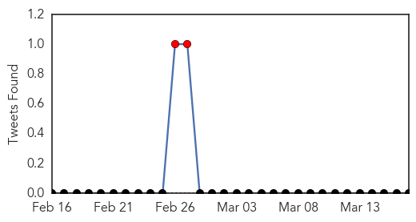
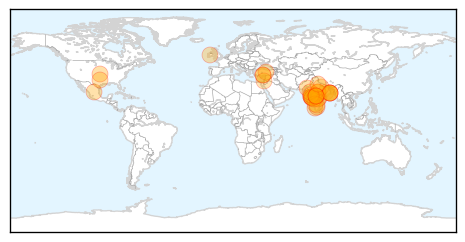
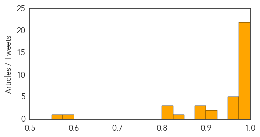
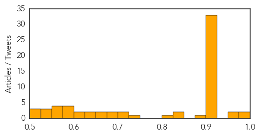

Swine Flu
30-Day Web Trend
6 alerts, 16 warnings

30-Day Twitter Trend
2 alerts, 0 warnings

Article Locations
Article Confidences
Top Articles:
- 1.000
- Turkey alarmed as swine flu kills 4 people in 5 days
- 1.000
- 100 swine flu deaths per month, but doctors say nothing to worry
- 0.999
- Is swine flu really scary or is market creating the panic to sell the remedy?
- 0.999
- Swine Flu: Is the threat over-hyped?
- 0.999
- 36 more swine flu deaths, CPI-M leader tests positive
- 0.999
- Swine-flu toll 1,587; cases reported 27,886: Nadda
- 0.999
- Doctors in Ahmedabad concerned over recovery time
- 0.999
- Swine-flu toll 1,587; cases reported 27,886: JP Nadda
- 0.998
- Number of victims of swine flu increases to 3 in Turkey
- 0.998
- Health ministry rules out swine flu epidemic
- 0.995
- JP Nadda: Swine-flu toll 1,587; cases reported 27,886
- 0.994
- Swine Flu: Death Toll in Telangana Mounts to 73
- 0.994
- Vaccination single best defense against H1N1
- 0.994
- Network of 21 labs established to combat swine flu: JP Nadda
- 0.991
- Turkey: Swine flu kills 11 in 2 years, epidemic ruled out
- 0.990
- Network of 21 labs established to combat swine flu: Govt
- 0.987
- Bengal swine flu toll 22, ex-minister tests positive
- 0.986
- Elderly man dies of H1N1 in Bethlehem, five others diagnosed with disease
- 0.986
- 4 new H1N1 cases in Assam
- 0.986
- State to bear hospital expenses of H1N1 patients on ventilator
- 0.981
- Bengal swine flu toll 22, ex-minister tests positive
- 0.979
- Bengal swine flu toll 22, ex-minister tests positive
- 0.973
- Swine flu claims 73 lives in Telangana since January
- 0.963
- Swine flu claims five more lives in Gujarat; toll 397
- 0.957
- Veteran CPI-M leader down with swine flu
- 0.952
- Veteran Communist Party Leader Gautam Deb Tests Positive for Swine Flu
- 0.950
- Veteran CPI-M leader down with swine flu
- 0.921
- Veteran CPI-M leader down with swine flu
- 0.906
- Child dies, swine flu suspected
- 0.898
- Another swine flu death in Bengal, toll 22
- 0.887
- Travel to India Protecting against the swine flu in India
- 0.886
- Young woman from Nablus dies of H1N1 in Israeli hospital
- 0.834
- Why are pvt hospitals turning away swine flu patients?
- 0.824
- H1N1 claims city’s 10th victim, dip in mercury worries docs
- 0.809
- Pune lab gets nod to conduct diagnosis tests
- 0.802
- Weather fillip for swine flu, child suspect
- 0.583
- Pune lab gets nod to conduct diagnosis tests
- 0.558
- State Plans Audit of Swine Flu Deaths
Top Tweets:
-
No tweets found for Mar 17, 2015
Unknown
30-Day Web Trend
1 alerts, 0 warnings

30-Day Twitter Trend
0 alerts, 0 warnings

Article Locations

Article Confidences
Top Articles:
- 0.987
- Norovirus cases taper off at Oakland University
- 0.981
- Baltic News Network - News from Latvia, Lithuania, Estonia
- 0.970
- Ross River virus: Health authorities warn of huge jump in cases in NSW
- 0.967
- Three new cases of tularemia reported
- 0.922
- Misperceptions Keep Kids from Getting Lifesaving Treatment for Tickborne Diseases
- 0.918
- Simple solution improves water and sanitation in Zambian health-care facilities
- 0.917
- Chicago Tribune
- 0.917
- Chicago Tribune
- 0.917
- Chicago Tribune
- 0.917
- Chicago Tribune
- 0.917
- Chicago Tribune
- 0.917
- Chicago Tribune
- 0.917
- Chicago Tribune
- 0.917
- Chicago Tribune
- 0.917
- Chicago Tribune
- 0.917
- Chicago Tribune
- 0.917
- Chicago Tribune
- 0.917
- Chicago Tribune
- 0.917
- Chicago Tribune
- 0.917
- Chicago Tribune
- 0.917
- Chicago Tribune
- 0.917
- Chicago Tribune
- 0.917
- Chicago Tribune
- 0.917
- Chicago Tribune
- 0.917
- Chicago Tribune
- 0.917
- Chicago Tribune
- 0.917
- Chicago Tribune
- 0.917
- Chicago Tribune
- 0.917
- Chicago Tribune
- 0.917
- Chicago Tribune
- 0.917
- Chicago Tribune
- 0.917
- Chicago Tribune
- 0.917
- Chicago Tribune
- 0.917
- Chicago Tribune
- 0.911
- Spike in Ross River Fever detections across state
- 0.910
- The world windows to Thailand
- 0.902
- Residents of Jaundice-hit Bania Sahi complains of negligence by administration
- 0.892
- Tuberculosis still raging in Eastern Europe (Update)
- 0.842
- Tuberculosis still raging in Eastern Europe
- 0.827
- Tuberculosis still raging in Eastern Europe
- 0.813
- Tuberculosis still raging in Eastern Europe
- 0.741
- Breaking News and Opinion Mareeg.com
- 0.722
- Studies linking fluoride in water to health issues prompt Australian review
- 0.722
- New Eurohealth on Reducing inequalities in health and health care
- 0.687
- Flathead Co. confirms 19 chickenpox cases
- 0.678
- News reader
- 0.657
- Central Valley missed worst of flu season
- 0.650
- WHO Warns of 'Very Worrying' Syria Health Situation
- 0.632
- Estimated 52,000 Canadians sought medical care outside Canada, Fraser Institute finds
- 0.627
- Vanuatu: Pacific: Tropical Cyclone Pam (TC Pam) External Situation Report No 1
Showing top 50 articles...
Top Tweets:
-
No tweets found for Mar 17, 2015